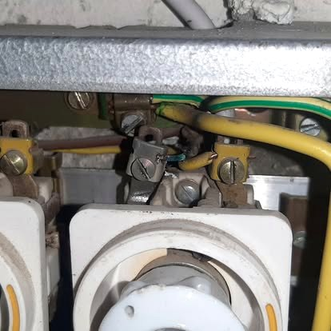

Dépannage, installations et OIBT à Bioley-Orjulaz : Gottofrey, votre électricien basé à Échallens.

Bioley-Orjulaz est une commune voisine d'Échallens que nous connaissons bien. Rénovation d'un logement, ajout de circuits, éclairage extérieur ou contrôle OIBT : nous intervenons rapidement et proprement.
Comme partout, notre priorité est un travail de qualité, aux normes NIBT, avec un devis clair et gratuit.
Un disjoncteur qui saute sans arrêt, une prise ou un interrupteur hors service, une coupure partielle de courant, une odeur de brûlé au tableau ? Ce sont des situations qu'il ne faut pas laisser traîner. Gottofrey assure le dépannage électrique à Bioley-Orjulaz et cherche l'origine de la panne pour la réparer durablement. La réactivité est d'ailleurs ce qui revient le plus souvent dans les avis de nos clients.
Vous avez reçu un avis de contrôle de votre gestionnaire de réseau, ou vous vendez un bien immobilier à Bioley-Orjulaz ? La loi impose un contrôle OIBT périodique de votre installation électrique. Nous réalisons le contrôle, établissons le rapport de sécurité (RS) et corrigeons au besoin les défauts constatés, pour une installation parfaitement en règle.
Maison ancienne, tableau à fusibles à vis, installation qui date ? Nous modernisons votre installation électrique à Bioley-Orjulaz selon les normes NIBT : nouveau tableau, disjoncteurs différentiels, circuits supplémentaires, mise à la terre. Un travail propre, sûr et documenté, avec un interlocuteur unique.
Le prix dépend de la nature et de l'ampleur des travaux (dépannage ponctuel, remplacement de tableau, installation complète, contrôle OIBT…). Chez Gottofrey, le principe est simple : un devis gratuit et sans engagement, clair et détaillé, avant toute intervention. Vous savez exactement à quoi vous attendre.
Avis Google, retranscrits mot pour mot.
« Très professionnel et sympathique. »
« Très réactif. Même pendant la période chargée de fin d'année. Très bon travail. »
« L'entreprise a réagi rapidement et avec professionnalisme. Nous sommes pleinement satisfaits. »
Devis gratuit et sans engagement. On vous rappelle vite.